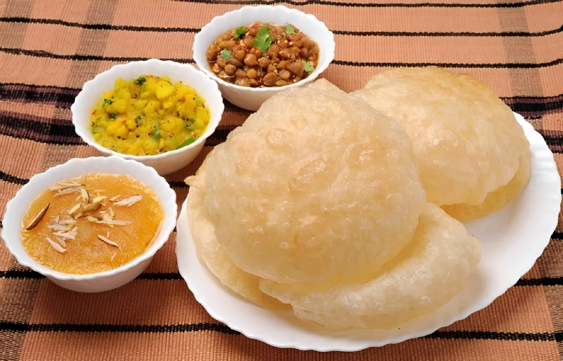
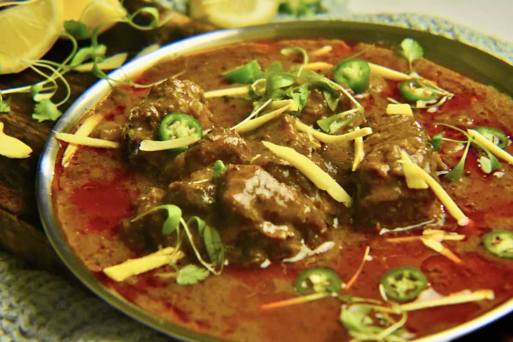
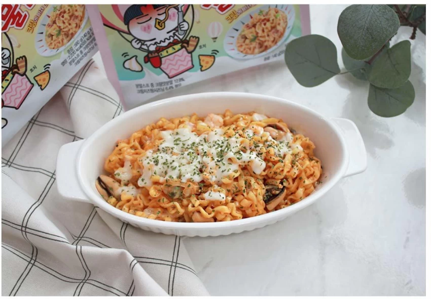

| Dishes | Cuisine | Recipe |
|---|---|---|
| Breakfast:Halwa purri |  |
Ingredients: Prepare Halwa: -Ghee (Clarified butter) 1 Cup -Hari elaichi (Green cardamom) 4-5 cracked -Sooji (Semolina) 1 Cup -Water 2 & ½ Cup -Orange food color ¼ tsp -Sugar 1 Cup or to taste Prepare Makhani Choley: -Pyaz (Onion) 3 medium -Tamatar (Tomatoes) 2 large -Cooking oil 2 tbs -Makhan (Butter) 3-4 tbs -Zeera (Cumin seeds) ½ tsp -Sukhi lal mirch (Dried red chillies) 3-4 -Adrak lehsan paste (Ginger garlic paste) 1 tbs -Namak (Salt) 1 tsp or to taste -Zeera powder (Cumin powder) 1 tsp -Lal mirch powder (Red chilli powder) 1 tsp or to taste -Dhania powder (Coriander powder) 1 tsp -Haldi powder (Turmeric powder) ½ tsp -Chicken powder ½ tbs -Kali mirch powder (Black pepper powder) ½ tsp -Choley (Chickpeas) boiled 2 Cups -Water 2 Cups -Cream 4-5 tbs -Garam masala powder ¼ tsp -Kasuri meethi (Dried fenugreek leaves) 1 tsp -Hara dhania (Fresh coriander) chopped handful -Hari mirch (Green chillies) sliced 2-3 -Makhan (Butter) 1 tbs -Hara dhania (Fresh coriander) chopped -Makhan (Butter) Prepare Poori: -Safed fine atta (White fine flour) 3 Cups -Namak (Salt) ½ tbs -Ghee (Clarified butter) 2 tbs -Water 1 & ½ Cup or as required -Cooking oil for frying -Badam (Almonds) sliced -Pista (Pistachios) sliced |
| Lunch: Nihari |  | Ingredients: -Hari elaichi (Green cardamom) 5-6 -Laung (Cloves) 5-6 -Sabut kali mirch (Black peppercorns) 1 tsp -Badi elaichi (Black cardamom) 2 -Badiyan ka phool (Star anise) 2 -Javitri (Mace) 1 piece -Jaifil (Nutmeg) ¼ inch piece -Sonth (Dried ginger) 2 pieces -Saunf (Fennel seeds) 1 & ½ tbs -Zeera (Cumin seeds) 1 tbs -Pipli (Long pepper) 3-4 -Tez patta (Bay leaves) 2 -Sabut dhania (Coriander seeds) 1 tbs -Darchini (Cinnamon sticks) 2 -Ajwain (Carom seeds) ½ tsp -Namak (Salt) 1 tsp or to taste -Lal mirch powder (Red chilli powder) 1 tbs or to taste -Haldi powder (Turmeric powder) 1 tsp -Kashmiri lal mirch (Kashmiri red chilli) powder 1 tbs -Atta (Wheat flour) 3 tbs -Baisan (Gram flour) 3 tbs Prepare Beef Nihari: -Water 1 & ½ Cup or as required -Cooking oil ½ Cup -Beef bong (Shank) 750g -Beef bones 250g -Adrak lehsan paste (Ginger garlic paste) 2 tbs -Water 2 litre or as required -Hara dhania (Fresh coriander) chopped -Adrak (Ginger) julienne -Hari mirch (Green chilli) sliced |
| Dinner: Ramen |  | No recipe, i use instant ramen |